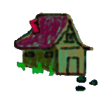
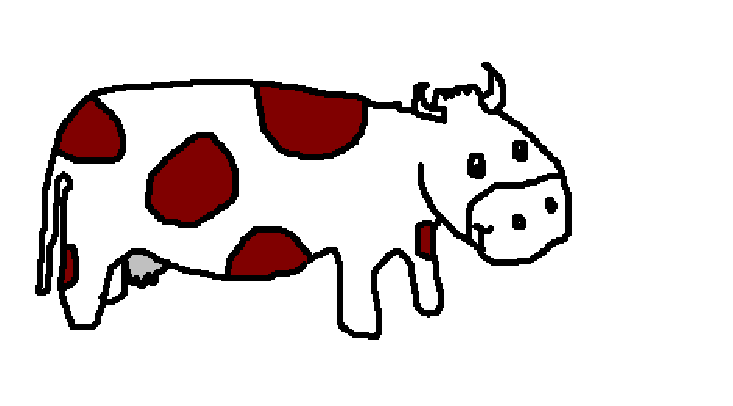
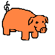
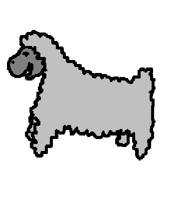
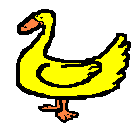
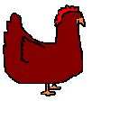
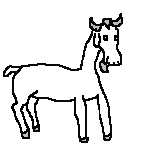

|
|

The animals that live in a farm all make special sounds....

There is a cow that goes MOO.....and makes the milk for children to drink.

There is the Piggy; he goes OINK, OINK, OINK.

There is the sheep, it has a wooly coat and goes BAA, BAA, BAA...

Here is the Duck, he goes QUACK....QUACK....

This is the chicken. It makes the eggs for the children to eat. It goes CLUCK...CLUCK....CLUCK....

Here is the goat. It makes milk and cheese, and it goes BEH....BEH....BEH.....
 There is a horse that goes NEIGH...NEIGH...
There is a horse that goes NEIGH...NEIGH...
and gallops around.
Back to Children's Storybooks Online
Copyright ©1997-2003 Rolando Merino. All rights reserved.
No part of this book may be reproduced or transmitted in any form
or by any process without prior written permission from the author.
041905416